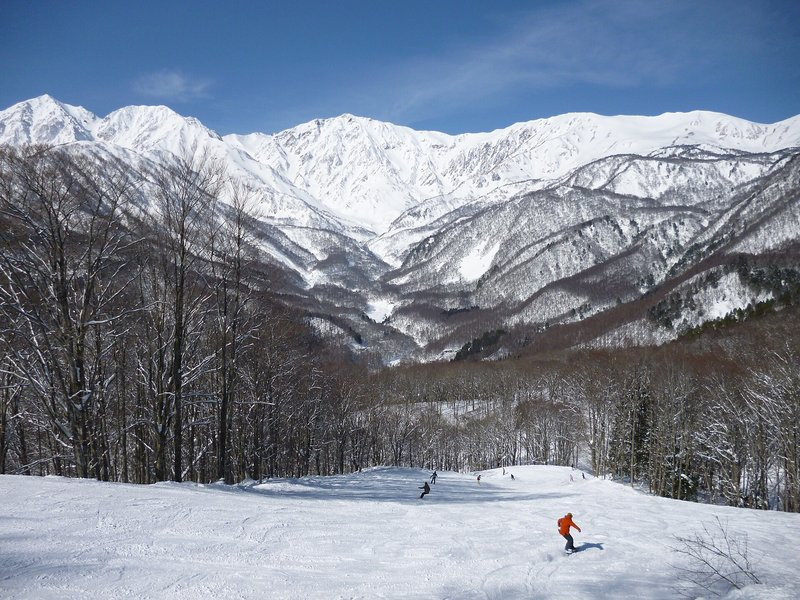

Winter ski · Dec–MarOn sale nowad
Winter ski 2026–27
Two ways in without a car: a lift ticket you pick up at the mountain, and a bus-and-lift package out of central Sapporo. Both are booked per date — check the snow and the price for your day before you pay.
-
Check dates on Klook ad
Hakuba Iwatake — 1-day lift ticket
US$46approx. ¥7,360 -
Check dates on Klook ad
Rusutsu — lift ticket & Sapporo bus
US$151approx. ¥24,000
Hakuba: lift only — skis, boots and a suit are a separate option at checkout, and the ticket is valid on the date you choose. Rusutsu: leaves five Sapporo hotels between 07:30 and 08:10, about six hours on the snow, back by 19:45; lunch and rental are not included. Prices and sales windows checked 27 November 2026.